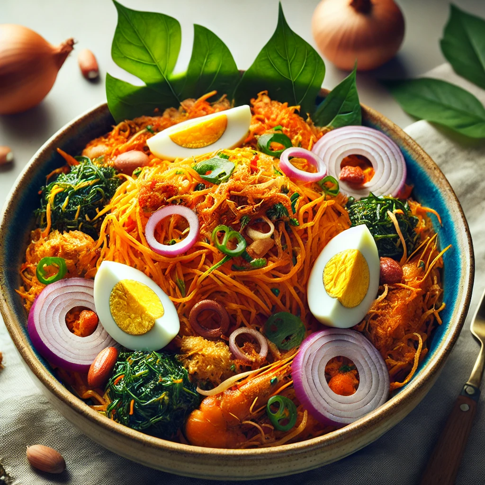

Abacha, also known as African Salad, is a traditional Igbo dish made from dried shredded cassava. It’s a delicious, tangy, and spicy dish often served with fried fish or meat.
3 cups dried shredded cassava (Abacha)
1/2 cup palm oil
1 tablespoon ground crayfish
1 medium onion, sliced
1 teaspoon ground pepper
2 tablespoons Ugba (fermented African oil bean)
1 tablespoon potash (optional)
1 teaspoon ground Ehuru (calabash nutmeg)
1 stock cube
Salt to taste
Boiled egg and garden egg leaves for garnish
Soak the dried Abacha in warm water for about 10 minutes or until soft. Drain and set aside.
In a small bowl, mix the potash (if using) with a little water, and then add the palm oil. Stir until the palm oil turns into a thick orange paste.
Add the ground crayfish, pepper, Ugba, Ehuru, and the stock cube to the palm oil mixture. Mix well to combine all ingredients.
Add the soaked Abacha to the mixture and stir to coat the cassava strands evenly with the sauce. Ensure everything is well combined.
Adjust the seasoning with salt and more pepper if needed.
Serve with sliced onions, boiled eggs, and garden egg leaves for garnish.
For a more luxurious touch, add pieces of fried fish or meat on top.Optional: Use less oil for a lighter version.
Tip: To enhance the flavor, let the Abacha sit for a few minutes before serving, allowing the cassava to absorb the sauce.